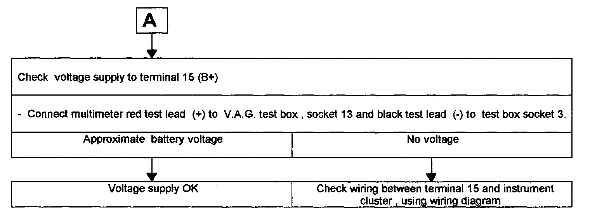

Instrument Cluster / Carrier: Testing and Inspection


Tools required:
- Digital multimeter Fluke 83 (US 1119)
- Test box V.A.G 1598
- Test adapter 1598/8
- Applicable wiring diagram
NOTE:
- The socket identifications on the test box VA. G 1598 are the same as the contact identification on the instrument cluster.
- All wires of the instrument cluster wiring harness between instrument cluster and relay panel were changed to all white wires of 0.35 mm(2). These wires may still be listed as colored in the wiring diagram. If the instrument cluster is faulty it must be replaced. Do not attempt repairs.
Test conditions
- Battery voltage OK
- Fuses OK See wiring diagram.
Troubleshooting preparations
- Switch off ignition.
- Get radio security code from customer.
- Disconnect battery ground cable.
- Remove instrument cluster.
- Using adapter wire 1598/8, connect test box V.A.G 1598 to 28-pin connector, terminal 1, on instrument cluster and disconnected 28-pin connector on wiring harness.
- Reconnect battery ground cable.
- Reset radio security code after troubleshooting is completed.